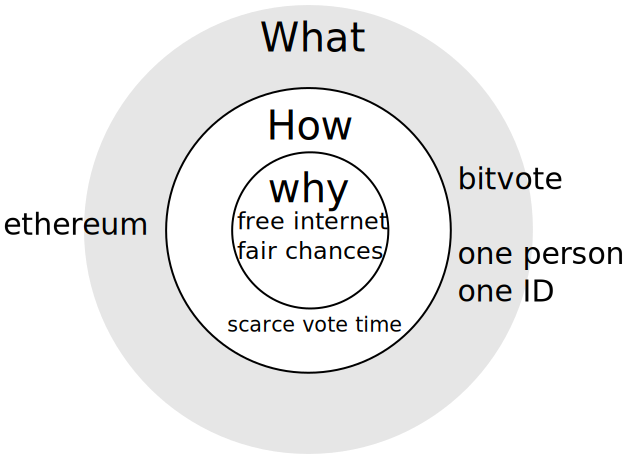
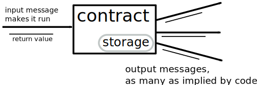
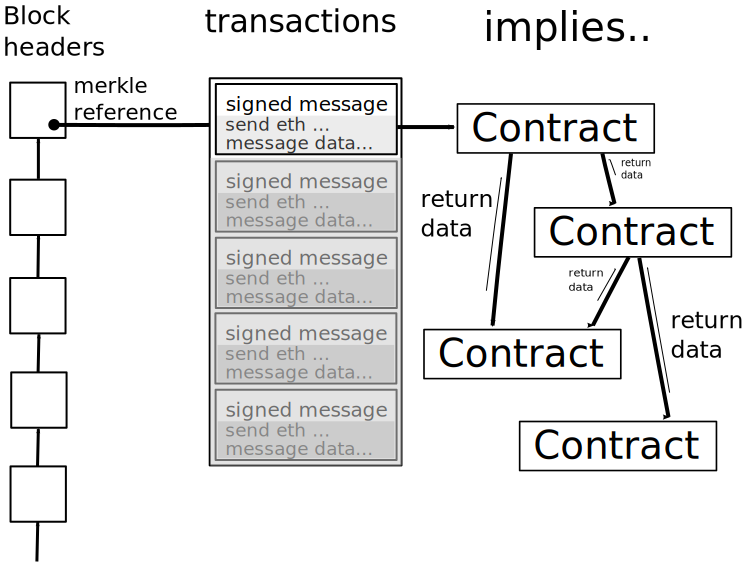

Bitvote

NOTES: I am jasper den Ouden, will be talking about bitvote.
In order introduce bitvote, i’ll start with the reasons the idea sprung up.
What the internet used to be
Wide open to new companies
Wide open to new blogs etcetera
Optimistic
NOTES:
… blogs had a chance of becoming popular on a large scale, if internet is compromised your disadvantage on i.e. search engines could hurt this.
Wiki pages not yet filled
Opertunities were not filled ⇒ business models
… because of that optimistic.
… Stopped because..
Wikipedia pages already written.
Businessmodels filled and habits & network effect
⇒ often better to get bought
⇒ Peter Thiel “competition is for losers”
Bitvote not a solution for every of these!
What it has become and is in danger of becoming
Television 2.0
Panopticon
Seeing… and manipulating!
xkcd on facebook

I mean, it's not like we could just demand to see the code that's governing our lives. What right do we have to poke around in Facebook's private affairs like that
(https://xkcd.com/1390/)
What we do now/before
essentially a vote by loudness. Largely it was ‘spamming’
(‘twitter storm’ over SOPA)
inefficient
insecure against manipulation (astroturf)
→ can the ‘will of the people’ be presented by something that is less ‘loudness’?
They all had to get there
The idea of Bitvote
Everyone gets vote-time, i.e. one second per second
⇒ keep track:
- vote⋅time of vote topics
- one person ↔ one ID
- amount of vote time available
NOTES:
⇒ vote time is scarce
⇒ spend according to how much you care
Anyone is free to create a topic; will often be a link.
What and why

(inspired from http://www.ted.com/talks/simon_sinek_how_great_leaders_inspire_action)
NOTES:
Inner ring is freedom of enterprise, freedom of speech and chance to get heard
Second ring is the abstract approach 1votehour/hour per person + anyone can create opinions to spend it on.
Outer ring is specific implementation of it.
What it looks like

Button that is in the flow of internet use
Need for decentralization
Otherwise:
Requires trust towards the operators.
Single place to sue/threaten.
Just not cool.
More technical bit
Ethereum

interfaces from arbitrary pages are possible any page can access the contract state and send transactions
NOTES: bitvote contract is like a ledger anyone can use. Anyone can write programs/modify ours, in order to have their own view of it.
Ethereum contracts recap
Contracts are programs
run if they receive a message

NOTES: Messages can also send ethers.
Ethereum contracts recap(2)
Transactions insert messages

Special positions
Ethereum addresses in contract storage.
Only that address can do X.
However a rule can change that contract storage.
The Bitvote contract diagram

Open problem 1: One per ID
Each person should only be able to get one second per second.
Not solid, but ideas:
Economic-network. There might be a way to go UBI → OnePerID rather than the other way around.
Reputation/trust network -like approaches.
- ‘Detectives’ point out doubles and ‘punishing’ nodes that vouched for it.
Open problem 2: Scalibility
More people implies more voting weight
when contract execution too expensive
cant say ‘tough luck’
NOTES: Ethereum working on it, some ideas that help.
To summarize
Bitvote is a project to give people a voice.
Interface is internet-browsing-like, where the browser can read Ethereum state
Challenges:
- One person per ID
- Large numbers of users ⇒ scalability
Thanks to
Aaron Bale who came with the idea, and has good ideas on the non-technical side.
Also for helping me
Ethereum!
Questions/Responses from the audience

Appendix: notes
The browser will likely not be the only way;
anyone is free to develop ways to get data from and send transactions too Ethereum contracts.
We have a wiki on bitvote.github.io/wiki.
About special positions; attempt to create terminology.
Appendix: Scaling
It is listed ontop here github.com/ethereum/wiki/wiki/Problems, but it is more defining the problem that solving right now. (though that is a good first step!)
Aggegrated signatures. (reddit.com/r/crypto/comments/291hzz/aggregate_signatures/)
Basically you have a secret and a public part in public key cryptography.
Signatures are data resulting from a program and the private key that indicates that a person signed it.
You can encrypt towards another public key. So the other guy can use his private key to open it, he can then also figure the sender public key.
Simplest aggegrate signing would to have a ‘public secret’ and repeatedly encrypting the same message. (not 100% sure that doesnt increase the size, believe so)
Hanging blocks. It increases space a lot, but it has achillies heel in data availability. The current approach solves it with votes, so aggegrate signatures matter to it!
o-jasper.github.io/blog/2014/06/03/hanging_blocks.html, possible approach with general ethereum contracts.
/